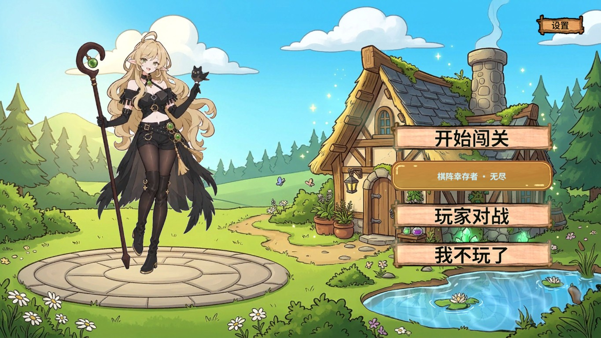
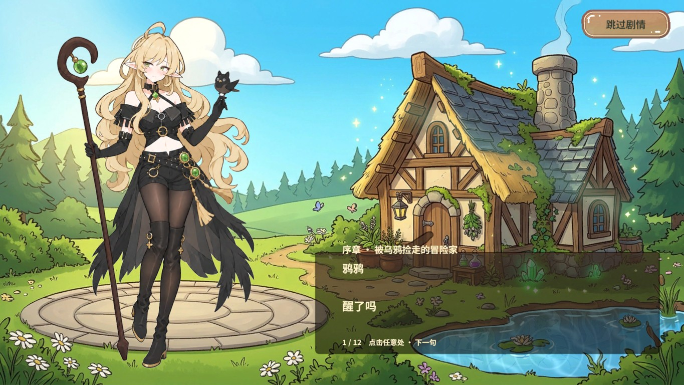
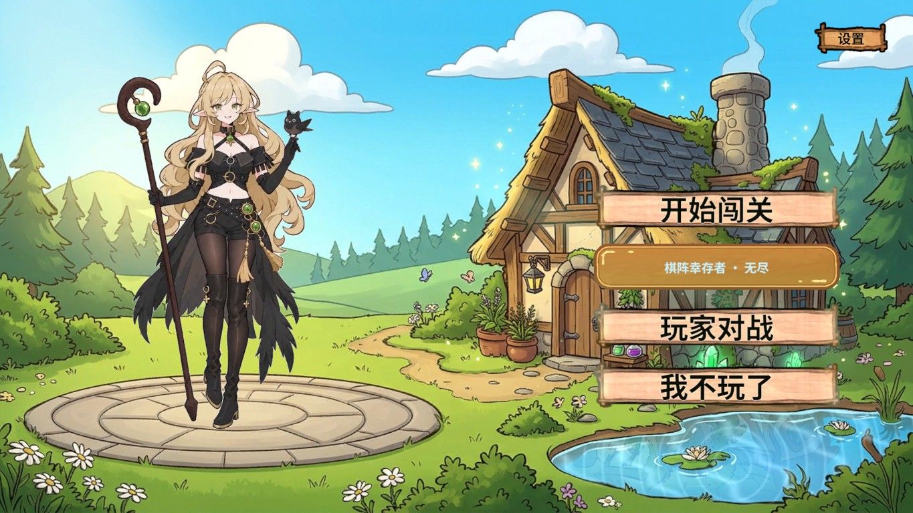

立绘配置与大厅动效
StoryBook支持默认/表情/篇章/逐句立绘配置；大厅新增可移动YayaPlacement与编辑态静帧预览。最终81步和AB模式验收通过，PC/Android资源更新，全部测试现场恢复。

默认位置下移后的场景大厅篇章立绘覆盖
逐句立绘覆盖
修改位移输入后仍由场景对象显示固定Shader时钟的16帧真实画面：水波、草木与小屋魔法光配置步骤与完整验收说明
# 立绘配置与大厅动效 · 2026-11-06
剧情立绘与大厅看板娘构图现在由Unity配置。默认大厅位置下移0.35世界单位。背景增加可调水波、植物风动、小屋扫光/光点、晶石呼吸与烟囱摆动；保持场景Renderer所有权，不把背景或角色放回大厅UI。
## 如何修改剧情立绘
1. 在Project选择 `Assets/GameRes/Config/Story/StoryBook.asset`。
2. Inspector顶部“默认立绘”可直接拖入Sprite。底部“表情编号与立绘”每行配对编辑编号/图片，可添加或删除。编号0使用默认立绘，不强制绑定某张笑脸。
3. 展开“剧情篇章”，可指定“篇章立绘覆盖”；展开“对白列表”，每句可指定“本句立绘覆盖”。优先级为：**本句覆盖 > 篇章覆盖 > 表情映射**。覆盖项留空继续按表情编号选图。
4. 点击“校验剧情配置”，保存资产。新图片先导入规范的 `Assets/GameRes/Art/` 功能目录并设为Sprite，再由GameResourceBuild生成唯一Sprite Atlas V2。新增角色目录需有项目图集归组规则，缺失时构建明确报错。
5. 配置/文案变更后运行仓库 `tools/font-subset.py`，通过RevCLI调用 `game.background.build`，参数 `{"target":"PC"}` 或 `{"target":"Android"}`。真实AB模式在重建前仍显示上一版资源，不能用编辑器直读冒充发布结果。
`GuideFrames/ExpressionIds` 旧字段保留序列化兼容，由自定义Inspector配对展示。每篇 `PortraitAtlasNames` 由实际显示图片及活动图集归属生成，隐藏且不手改；运行期依列表借图集绑定租约。StoryBook本身仍持有选用图片的AB依赖，关闭面板归还绑定租约不等于强制卸掉所有纹理。
资源配方仅在第一次旧版本迁移时设置初始立绘；后续重跑保留默认立绘、映射、篇章覆盖和逐句覆盖，不覆盖后续编辑的对白。
## 如何调整大厅看板娘位置
- 打开 `Assets/Scenes/StartScene.unity`，选 `LobbyScene/YayaPlacement`。用Scene移动工具或Transform的Local Position调整左右/上下；**移动父节点YayaPlacement**，子节点Yaya的位置由等比构图适配计算。
- 默认Local Position为 `(0,-0.35,0)`，比上一版下移。保存场景即可持久化，重跑大厅制作配方保留此节点位移。
- 选 `LobbyScene` 的LobbySceneView，可调“脚底原画锚点”和“人物高度”。锚点0～1，以原图左下角为原点；高度单位为世界单位，默认9.2。
- 编辑态显示静帧预览，方便直接调整。Play进入时清掉预览引用，正式材质/图集/Animator由RevResManager装配；保存编辑态场景，Play中的临时改动按Unity语义退出后还原。
## 如何调背景动效
选择 `Assets/GameRes/Material/Lobby/MagicCottageMaterial.mat`：
| 参数 | 默认 | 用途 |
|---|---:|---|
| 水面折射幅度 | 0.006 | 水纹取样位移，0关闭折射 |
| 水波速度 | 0.8 | 周期波推进速度 |
| 水波亮纹强度 | 0.32 | 水塘窄亮纹与扩散圆波 |
| 草木摆动幅度 | 0.0045 | 局部绿草/叶片摆动 |
| 风速 | 1.2 | 阵风与叶片细摆速度 |
| 魔法晶石柔光 | 0.55 | 原画晶石和药瓶呼吸 |
| 小屋魔法扫光与光点 | 0.38 | 绿色柔光扫过与稀疏光点 |
| 烟囱烟雾摆动 | 0.003 | 烟雾局部飘动 |
旧RGB遮罩继续使用R天空、G水塘、B发光晶石；新增NatureMask使用R草木、G小屋、B烟雾。生成源为仓库 `tools/lobby-nature-mask.py`，不修改原画；材质迁移标记只升级旧默认值一次，后续构建保留用户调参。
水波使用不同方向/频率周期波，亮纹和圆波增强可读性；草木用空间相位错开的低频阵风与高频细摆；小屋主体没有整图旋转，圆台和道路不随风扭曲。所有动态在单张背景Shader中完成，无每帧贴图生成/材质克隆。
## 验证与证据
环境：Unity 2022.3.15f1c1、Windows Editor、正式StartScene、真实PC AB、内存剧情/积分隔离。执行真实RevMCP `rev_discover` → `rev_call(story.state)` → `rev_run`，编辑器制作/构建用RevCLI live，保护场景GUID与现场。
| 验收 | 结果 |
|---|---|
| 立绘优先级/未知表情 | 7项检查通过，临时SO释放，不改正式对白 |
| 保存与重制作 | 5项通过：默认图、表情映射、篇章图、逐句图、场景位移都保留，finally恢复原输入 |
| 初轮真实落屏 | 57步通过，表情/篇章/逐句/默认四类图均实际显示且packed，16帧背景变化 |
| 最终场景/章节回归 | 81步通过，四级立绘、位移、动效、1/3/6章进入与返回、资源绑定和errorCount=0；3步finally均通过 |
| 最终编译与AB模式 | 3步通过，abMode=true、自然遮罩和大厅可见、errorCount=0；停止Play并取消隔离 |
| PC/Android资源 | 均73包构建发布；642映射、19活动图集、314张图片唯一覆盖；重复/循环/漏标/重名/Android Shader错误均0 |
固定Shader时钟0与1.8秒比较，排除人物和菜单后，对像素RGB平均绝对差（0～255）进行检查。不是FPS或真机性能指标。
| 区域 | 采样像素 | 平均差 | 差值超过1的比例 |
|---|---:|---:|---:|
| 水塘 | 83056 | 22.1581 | 98.3% |
| 草木 | 234401 | 11.1253 | 83.26% |
| 小屋 | 87509 | 5.7744 | 37.16% |
| 稳定圆台 | 6211 | 0.0118 | 0.26% |
人工偏移夹具设为-0.65后，相机布局刷新仍得到-0.649999976，验证移动节点没有被自动布局覆盖。GIF来自16张真实完整截图，仅缩小到720宽，未补画。
| 平台 | 包数 | 小屋纹理/遮罩/材质 | 剧情配置包 |
|---|---:|---:|---:|
| PC | 73 | 570.9 KiB | 6.7 KiB |
| Android | 73 | 532.4 KiB | 6.7 KiB |
中文子集1727字、769820字节。Android完成构建与Shader门禁，未执行Android真机/独立Player/IL2CPP，不承诺目标设备帧率。
## 首次失败与框架边界
第一次81步回归主流程完成后，最终日志检查发现一次RevAutomationBridge读取inbox文件的Sharing violation（错误位于框架编辑器文件桥）。保留失败原始证据，未在本仓库修改Revolution内核；新隔离Play完整复验81步通过。该结果证明当前切片通过，不表示文件桥偶发竞争已根治。
补充来源诊断曾误用技能文档列出、当前快照实际未提供的RevResHandle.BundleName，造成两条编译错误；已移除，最终当前编译messages为空且AB模式检查通过。没有用不存在API或降低错误计数断言凑通过。
本切片复用RevTask、RevUI/RevUIPart、RevResManager、RevServices、集中GM/RevRuntimeAutomation及现有GameFlow；配置生成在Editor，运行期只读。Runtime Mono只负责场景表现，流程状态仍由GameFlow/FSM/RevScope持有。新增表现夹具仅UNITY_EDITOR且强制隔离，收尾还原输入，不写生产存档。
原始JSON/日志在忽略目录 `.codex/work/lobby-config-2026-11-06`；文档保留本说明和必要图片/GIF，不生成ZIP或Profiler录制。
## 参考资料
于2026-11-06实际读取以下官方资料，仅参考算法与API契约；本项目实现为原画遮罩下的2D采样适配，没有复制其3D网格系统。
- NVIDIA GPU Gems第1章，周期波、水面细节与参数意义：<https://developer.nvidia.com/gpugems/gpugems/part-i-natural-effects/chapter-1-effective-water-simulation-physical-models>
- NVIDIA GPU Gems第7章，草地风动与相位：<https://developer.nvidia.com/gpugems/gpugems/part-i-natural-effects/chapter-7-rendering-countless-blades-waving-grass>
- Unity 2022.3 Shader材质属性：<https://docs.unity3d.com/2022.3/Documentation/Manual/SL-Properties.html>
- Unity 2022.3 MaterialPropertyBlock：<https://docs.unity3d.com/2022.3/Documentation/ScriptReference/MaterialPropertyBlock.html>